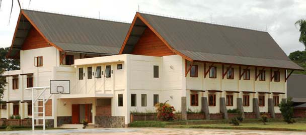

Institut Teknologi Del (IT Del) menyediakan fasilitas perumahan untuk dosen dan staf penunjang di lingkungan kampus. Dengan tinggal di lingkungan kampus, seluruh dosen dan staf bisa memberikan kontribusi terbaik untuk kelancaran dan kualitas proses akademis dan non-akademis di IT Del. Dengan lingkungan dan fasilitas yang ergonomis, diharapkan juga dosen bisa mengembangkan diri secara lebih maksimal. Beberapa tipe perumahan yang tersedia untuk dosen dan staf (setiap bangunan di beri gambar):
- Rumah Dosen (RD), terdiri dari 8 unit rumah yang fully-furnished, diperuntukkan untuk dosen yang sudah berkeluarga.
- Mansionette, merupakan bangunan dua lantai terdiri dari 7 two bedroom fully-furnished flat, diperuntukkan untuk dosen/staf yang sudah berkeluarga.
- Town House, terdiri dari 8 unit fully-furnished town house, diperuntukkan untuk dosen yang sudah berkeluarga.
- Studio, merupakan self-contained one-bedroom unit, yang diperuntukkan untuk dosen/staf yang belum menikah.
Seluruh mahasiswa IT Del diwajibkan tinggal di asrama yang disediakan. Hal ini untuk mendukung sistem pendidikan vokasi dimana mahasiswa akan melaksanakan kegiatan akademis terjadwal sampai sore hari ditambah kegiatan mandiri hingga pukul 10 malam hari. Dengan tinggal di asrama yang lokasinya berada di dalam lingkungan kampus, mahasiswa dapat segera beristirahat setelah melaksanakan kegiatan terjadwal di kampus. Dengan beristirahat yang cukup dan baik diharapkan performansi mahasiswa dalam setiap kegiatan di dalam kampus akan maksimal. Untuk mendukung kualitas hidup berasrama, mahasiswa akan diawasi oleh Bapak/Ibu asrama dibantu oleh Kakak/Abang asrama. Dengan peraturan asrama yang diberlakukan, mahasiswa akan hidup lebih disiplin dan berbudaya.
Seluruh asrama mahasiswa dilengkapi dengan tempat tidur dan lemari dan juga fasilitas mandi dan cuci yang memadai. Asrama yang tersedia menempatkan perempuan dan laki-laki di tempat terpisah. Bangunan asrama terdiri dari:
- Asrama I, merupakan bangunan 2 lantai dengan 24 kamar, dapat menampung sebanyak 90 mahasiswa
- Asrama II, merupakan bangunan 2 lantai dengan 24 kamar, dapat menampung sebanyak 90 mahasiswa
- Asrama II (Asrama Putera) terdiri dari dua bangunan masing-masing 2 lantai dengan 80 kamar, dapat menampung sebanyak 400 mahasiswa
- Asrama III (Asrama Putri), merupakan bangunan 3 lantai dengan 40 kamar, dapat menampung sebanyak 150 mahasiswa
IT Del juga menyediakan akomodasi bagi tamu yang berkunjung. Terdapat 6 unit Guest House, dilengkapi dengan furniture yang lengkap, dapur juga kamar mandi. Pemandangan indah panorama Danau Toba menambah keasrian fasilitas ini. Fasilitas ini diharapkan memberikan kenyamanan bagi tamu baik tamu akademis maupun non-akademis.